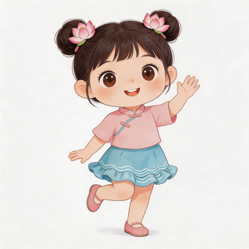

Seven useful little missions
About 15 minutes a day · 每日約 15 分鐘。Listen, say it once, then try the mission.
A friendly, practical Cantonese starter for children new to Hong Kong. Meet Oliver and Maya, practise useful words, and try one small real-life mission each day.
English is your bridge. Every phrase includes Traditional Chinese, Jyutping and an English meaning. Listen, choose, and practise at your own pace.

About 15 minutes a day · 每日約 15 分鐘。Listen, say it once, then try the mission.